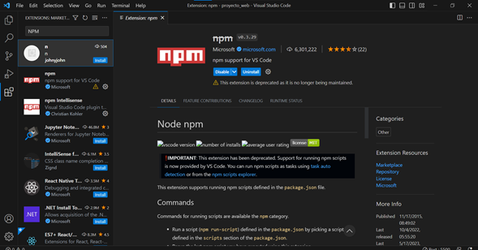

| Contenido | |
|---|---|
| Propósito de la herramienta | Proceso de instalación |
| Video de instalación (Auxiliar) | Evidencia de instalación |
NPM (Node Package Manager) es una herramienta que se utiliza con Node.js para administrar paquetes de software y dependencias en proyectos de desarrollo de JavaScript. Su propósito principal es facilitar la instalación, actualización y gestión de las bibliotecas y módulos de terceros que se utilizan en una aplicación o proyecto.
Para instalar NPM, sigue estos pasos:
node -v. Debería mostrarte la versión instalada de Node.js.npm -v. Debería mostrarte la versión instalada
de NPM.En este video se explica el proceso de instalación de NPM:
Esta es mi evidencia de Instalacion
